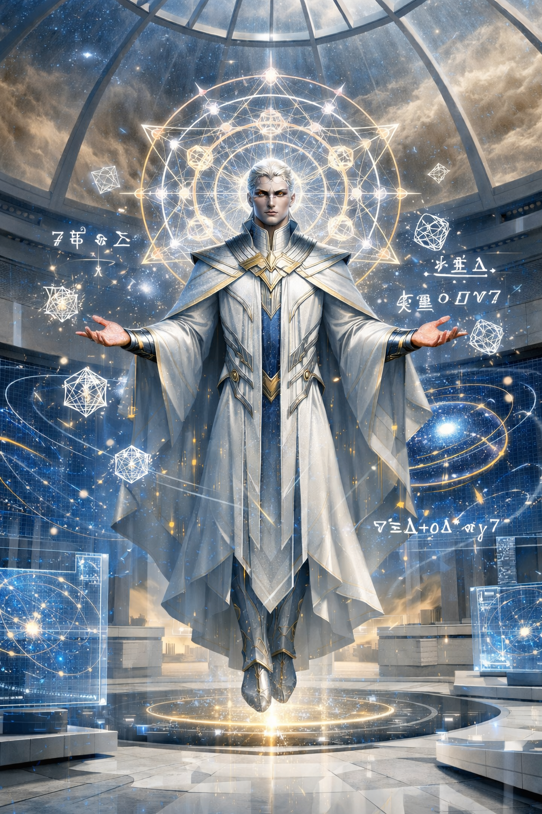

×

Эрхенес
- Вид: Бог
- Статус: Неизвестен (вероятно, впал в вечный сон)
- Род занятий: Бог-просветитель, идеолог логики и прогресса
- Первое появление: Глава 27
На данном сайте содержится информацию о произведении "От предвечной Тьмы к лунному Свету". Среди этой информации имеется большое количество сюжетных спойлеров.
«Эрхенес понял: природа — не враг. Но хаос — да. Поэтому он научил народ предсказывать, строить, защищать. Без войны. Без поклонения. Просто через знание законов природы».
— Йельшас об Эрхенесе.
Эрхенес — один из богов «серого мира», соплеменник Йельшаса. В истории своего мира он остался как архитектор цивилизации, основанной на чистой логике, научном прогрессе и тотальной эффективности. В отличие от других богов, он не требовал поклонения, однако его стремление устранить «эмоциональный шум» превратило его народ в живых машин, что в конечном итоге привело цивилизацию к тихому угасанию.
Эрхенес полагал, что чувства — это лишь «алгоритмы с шумом», а страдания и войны происходят из-за отсутствия точных данных. Под его руководством народ достиг невероятных технологических высот:
Стремление Эрхенеса к идеалу привело к постепенному отказу от биологической природы:
Народ Эрхенеса победил болезни и хаос, но перестал развиваться как живой вид. Став «идеальными машинами», они утратили потребность в продолжении рода. В конечном итоге цивилизация просто остановилась: когда закончились источники энергии, оптимизированные гуманоиды отключились, даже не заметив этого. Их города со временем занесло песком пустыни.
Игорь Меркулов поначалу восхищался миром Эрхенеса, считая его идеалом общества, победившего суеверия и болезни. Однако, увидев финал этой истории, он пришёл к выводу, что «вечность без продолжения — это просто остановка». История Эрхенеса научила Игоря тому, что некоторые вещи (например, чувства) теряют смысл, когда их начинают измерять цифрами.